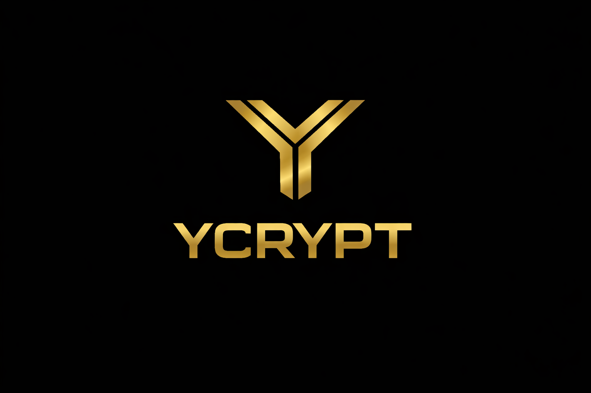

Cybersecurity • Offline Recovery
Offline-first • Non-custodial
Quando perdi l’accesso, la sicurezza collassa.
YCrypt è recovery crittografico offline: elimina password e seed phrase dal processo di recupero,
senza dipendere da cloud fidati e senza introdurre un single point of failure.
Domanda di brevetto depositata • Early-stage • Focus: Enterprise Secrets & Break-glass
Problema
Password persa
- Accesso irreversibile
- Escalation e supporto
- Fermi operativi
Problema
Seed phrase smarrita
- Perdita totale
- Rischio umano elevato
- Backup sensibili
Problema
Recovery cloud
- Non funziona offline
- Dipendenza esterna
- Rischio in emergenza
YCrypt
Cosa risolve
- Recovery offline anche in emergenza
- Nessuna credenziale riutilizzabile
- Nessun single point of failure crittografico
- Break-glass verificabile (enterprise)
Posizionamento
Non è un login system
- Non è un token / MFA
- Nasce per il “worst case”
- Protegge la possibilità di recuperare l’accesso
Use case
Enterprise secrets
Break-glass, governance, continuità operativa.
Use case
Cold data offline
Backup critici e archivi cifrati accessibili senza cloud.
Use case
Self-custody regolamentata
Recovery senza custodia centrale, future-proof.
Stato
A che punto siamo
- Domanda di brevetto depositata (Patent pending)
- Core di recovery offline definito e validato
- Estensione operativa del modello offline a più dispositivi
Contatto
Parliamone
Contatto diretto via email. NDA disponibile su richiesta.